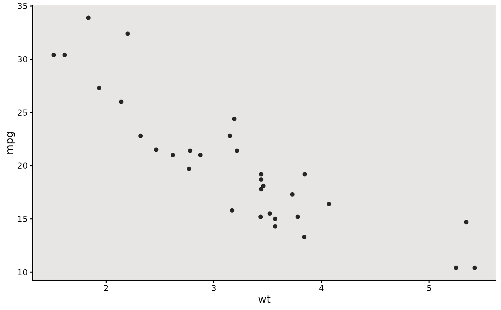
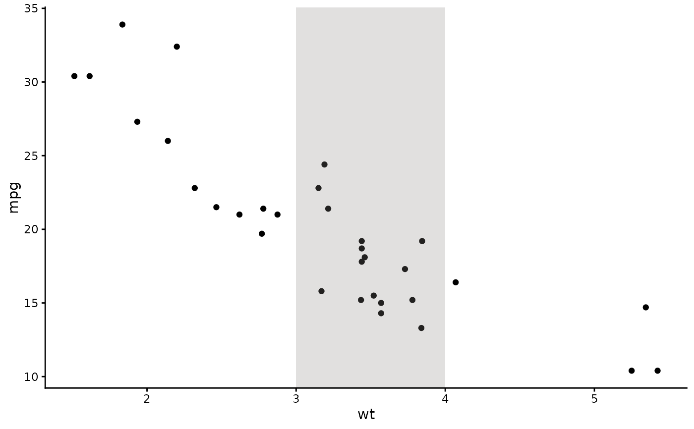
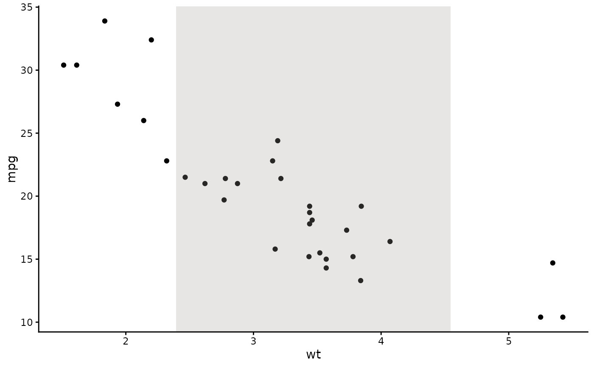
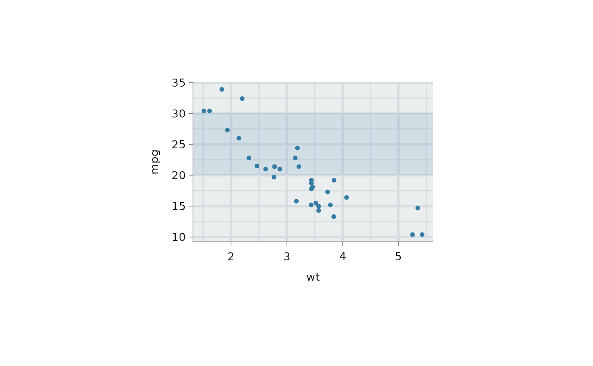

Draws a filled rectangle over the panel with colour defaults taken from the set theme. Defaults to a subtle overlay across the full panel, with the fill automatically adapting to light or dark panel backgrounds.
Usage
annotate_panel_shade(
...,
xmin = -Inf,
xmax = Inf,
ymin = -Inf,
ymax = Inf,
fill = NULL,
alpha = 0.25,
colour = "transparent",
linewidth = NULL,
linetype = NULL
)Arguments
- ...
Not used. Allows trailing commas and named-argument style calls.
- xmin, xmax
Left and right edges of the rectangle. Defaults to
-InfandInf. UseI()for normalized coordinates (0-1).- ymin, ymax
Bottom and top edges of the rectangle. Defaults to
-InfandInf. UseI()for normalized coordinates (0-1).- fill
Fill colour. Defaults to a neutral grey that adapts to the panel background luminance.
- alpha
Opacity of the rectangle. Defaults to
0.25.- colour
Border colour. Defaults to
"transparent".- linewidth
Inherits from
panel.borderin the set theme. Supportsrel().- linetype
Border linetype. Defaults to
1.
Examples
library(ggplot2)
set_theme(theme_classic())
p <- ggplot(mtcars, aes(wt, mpg)) +
geom_point()
# Shade the full panel
p + annotate_panel_shade()

# Shade a specific data range
p + annotate_panel_shade(xmin = 3, xmax = 4)

# Shade using normalized coordinates
p + annotate_panel_shade(xmin = I(0.25), xmax = I(0.75))

# Custom fill and opacity
p + annotate_panel_shade(ymin = 20, ymax = 30, fill = "steelblue", alpha = 0.15)
